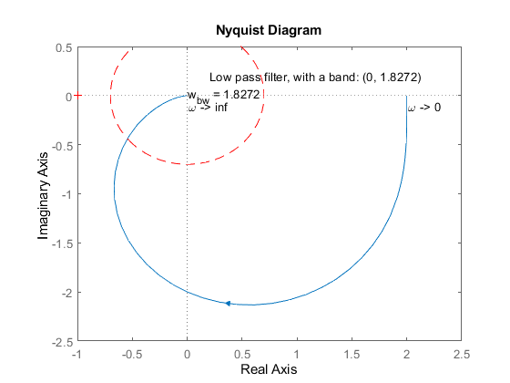
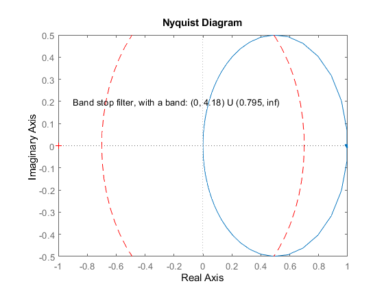

Contents
4.1 Problems: Nyquist diagrams
a) Defining the tf function and ploting a the coresponding nyqusit diagramm
H = tf([2], [1 1 1]); [re, im, wout] = nyquist(H); p = nyquistplot(H); % only showing the positive freq. setoptions(p,'ShowFullContour','off'); % plot a red, dashed line unit (0.7) circle hold; x=0:0.1:2*pi; plot(0.7*sin(x),0.7*cos(x),'--r'); shg; % Calculating the band_with freq. for i = 1:length(wout) if(sqrt(im(i)^2 + re(i)^2) < 0.73) if(sqrt(im(i)^2 + re(i)^2) > 0.65) w_bw = wout(i); end end end
Current plot held
The frequencie regions
text(2.01, -0.1,'\omega -> 0'); text(0.01, -0.1,'\omega -> inf'); text(0,0,['w_b_w = ', num2str(w_bw)]); text(0.2,0.2, ['Low pass filter, with a band: (0, ', num2str(w_bw), ')']); shg;
Simulating a sinwave input with a 1rad/s freq.
the signal is amplified (obtained from the simulation)
w = 1; f = w/2/pi; T = 1/f; t = 0:0.01:24*T; u = sin(w*t); figure; lsim(H, u,t); shg;
Simulating a sinwave input with a 1.3 rad/s freq.
the signal is amplified (obtained from the simulation)
w = 1.3; f = w/2/pi; T = 1/f; t = 0:0.01:24*T; u = sin(w*t); figure; lsim(H, u,t); shg;
b)
Defining the tf function and ploting a the coresponding nyqusit diagramm
figure; H = tf([1 4], [0.3 1 1]); [re, im, wout] = nyquist(H); p = nyquistplot(H); % only showing the positive freq. setoptions(p,'ShowFullContour','off'); % plot a red, dashed line unit (0.7) circle hold; x=0:0.1:2*pi; plot(0.7*sin(x),0.7*cos(x),'--r'); shg; text(0.2,0.2, 'Low pass filter, with a band: (0, 5.48)'); shg;
Current plot held
c)
Defining the tf function and ploting a the coresponding nyqusit diagramm
figure; H = tf([1 0 0], [0.3 1 1]); [re, im, wout] = nyquist(H); p = nyquistplot(H); % only showing the positive freq. setoptions(p,'ShowFullContour','off'); % plot a red, dashed line unit (0.7) circle hold on; x=0:0.1:2*pi; plot(0.7*sin(x),0.7*cos(x),'--r'); shg; text(-0.9,0.2, 'High pass filter, with a band: (0.918, inf) '); shg;
d)
Defining the tf function and ploting a the coresponding nyqusit diagramm
figure; H = tf([1 0], [0.3 1 1]); [re, im, wout] = nyquist(H); p = nyquistplot(H); % only showing the positive freq. setoptions(p,'ShowFullContour','off'); % plot a red, dashed line unit (0.7) circle hold; x=0:0.1:2*pi; plot(0.7*sin(x),0.7*cos(x),'--r'); shg; text(-0.9,0.2, 'Band stop filter, with a band: (0, 4.18) U (0.795, inf) '); shg;
Current plot held